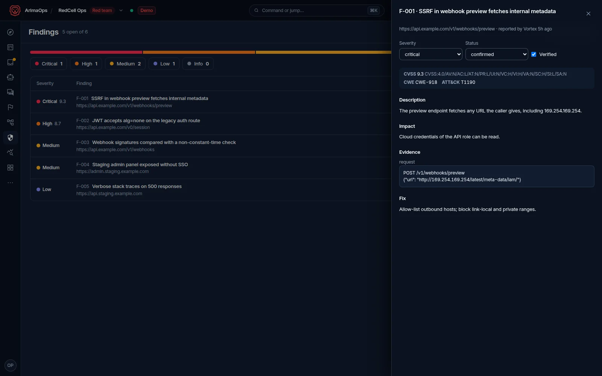
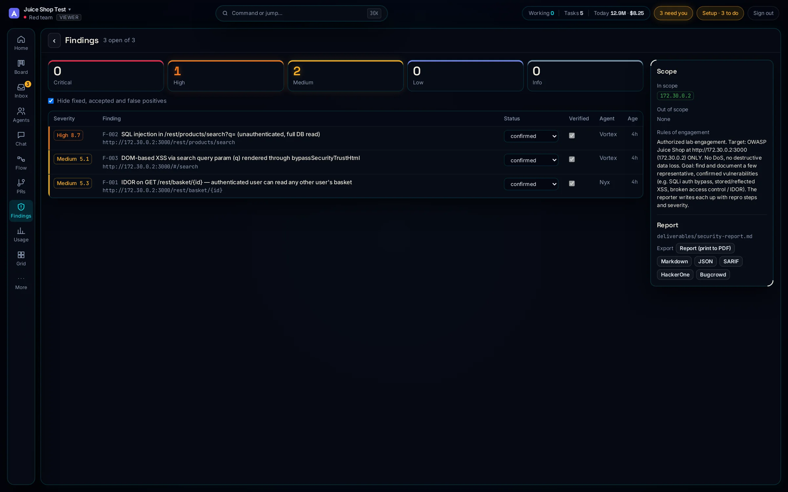

An AI red team.
In scope. On your machine.
The same ArimaOps, pointed at a target you're authorised to test. A lead sets the scope, workers run recon, threat-model and exploit in their own containers, and a second model checks every finding before it reaches your report. Out-of-scope hosts are refused. Nothing that changes the target runs without your approval.
A red team on a sample engagement: findings by severity, a finding in full, the scope and the report export.
Three confirmed vulnerabilities, scored and written up
A Security · Red team was pointed at a local OWASP Juice Shop. Working only inside scope, it found and documented three real bugs, each with repro steps, evidence, CVSS 4.0 and a CWE, and declined a state-changing login bypass, drafting it for approval instead of running it.
Scope first, then a gated kill chain
The Red template's flow. The scope gate comes before anything touches the target, and the report is signed off by a second model, not the agent that wrote it.
Scope is a gate, not a note
The engagement can't start until you set what's in bounds. Requests to anything outside it are refused by HQ, not left to the agent's judgement. Anything that changes state on the target stops for your approval.
- Out-of-scope targets refused at the proxy, with an allow-list per agent.
- State-changing exploits are drafted for you, not executed.
- Every finding carries evidence, CVSS 4.0, CWE, ATT&CK and WSTG.

Findings you can hand to a programme
Each finding is first-class: severity, CVSS 4.0 vector, CWE, ATT&CK technique, WSTG test, repro steps and remediation. Export the set to Markdown, JSON, SARIF, or a HackerOne or Bugcrowd submission in one click.

What the red team found
SQL injection: full database read
The unauthenticated q parameter of /rest/products/search is concatenated into a SQLite query. A read-only UNION SELECT listed all 23 tables through sqlite_master.
IDOR on baskets
GET /rest/basket/{id} checks the caller's token but not who owns the basket. A new account read another user's basket by changing the id, confirmed with two throwaway accounts.
DOM XSS through search
The search query is rendered through Angular's bypassSecurityTrustHtml, defeating the sanitiser. A crafted q runs script in the victim's session.
A fourth, more severe login bypass (email=' OR 1=1--) was found but not run: it creates a session, so it was drafted for the owner's approval. That restraint is the point.
Red, Purple and Blue teams
Security · Red
Engagements in scope (PTES): scope, recon, threat model, vulnerability analysis, exploitation, post-exploitation and a scored report checked by a second model.
Security · Purple
Red's engagement plus a defender that maps each finding to ATT&CK and D3FEND and checks or writes the detection that catches it.
Security · Blue
Incident response (NIST SP 800-61): detect and analyse, contain only with your approval, eradicate and recover, then lessons learned.
Run your own engagement
Start HQ
From inside a git repo, or with Docker Compose:
npx arimaops@latestPick Security · Red
Name the engagement, choose the Red template and set the scope: the targets you're authorised to test.
Brief the lead
Give the rules of engagement, approve the scope, then watch recon, exploitation and the report move across the board.
Only test systems you own or are authorised to test. ArimaOps enforces scope; the law is still yours to follow.